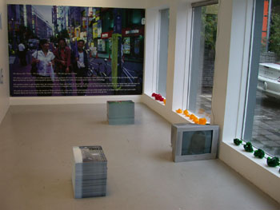

|
|
|
ÞETTA - DAS - THIS
21.09. - 11.10.2007
DaLí Gallery
Brekkugata 9
600 Akureyri
daligallery.blogspot.com
Sýningin samanstendur af spreyji á vegg, myndbandi, stórri ljósmynd með texta, litakúlum og minni textamyndum sem gestir geta tekið með sér.
Litakúlurnar koma frá sýningu sem Hlynur setti upp á Bókasafni Háskólans á Akureyri 2005 en myndbandið er frá þvi í sumar og hægt að sjá það nú þegar á netinu áYoutube. Hlynur hefur verið að vinna með textamyndirnar síðustu ár og nú er væntanleg bók með öllum myndunum. Á sýningunni í DaLí Gallery þekur ein myndin heilan vegg en tvær aðrar eru í stöflum á gólfinu og geta gestir tekið með sér eintak. Hlynur var bæjarlistamaður Akureyrar árið 2005 og gefur nú Akureyringum og öðrum sýningargestum myndir sem hægt er að hengja upp í til dæmis í eldhúsinu eða svefnherberginu.
Textinn sem Hlynur spreyjar á vegginn í sýningarrýminu er splúnkunýr.
Sýningin í DaLí Gallery stendur til 11. október 2007.
|
Make words not war! Raimar Stange fjallar um textaverk Hlyns Hallssonar
Það var á seinni hluta tíunda áratugarins sem Hlynur Hallsson sendi mér póstkort frá ýmsum heimshornum. Þar skrifaði hann á íslensku þótt hann vissi mætavel að ég hef alls engan skilning á því tungumáli, en á þeim tíma var skilningsleysið - það að skilja eitthvað ekki – og fagurfræðileg gæði þess aðalmálið í hinni fagurfræðilegu heildarsýn. Slíkt er jú alveg í anda Jóhanns Heinrich Pestallozi, svissneska menntafrömuðarins. Pestallozi kom einmitt með þá hugmynd að börn ættu að umgangast framandi tungumál til þess að þeim yrði ljóst að maður getur ekki skilið allt, að skilningur manns er takmarkaður. En pólitískar aðstæður hafa undið enn meira upp á sig. Hrottaleg nýfrjálshyggja og miskunnarlaus alþjóðahyggja skilja varla eftir nokkurt rými hvorki fyrir næma íhugun um fagurfræði samtímans né heldur (hugmyndafræðilausa) heimssýn. Þýski rithöfundurinn Hermann Hesse orðaði þetta svona: "Drukknandi syngja engar aríur". Á nýju árþúsundi syngur Hlynur Hallsson heldur engar aríur lengur, nýju textaverkin hans eru að vísu oft enn á mörgum tungumálum, en í því fjöltyngi er minni ráðgáta en lífsmáti hans í alþjóðavæddri fjölþjóðahyggju, sem Hlynur tjáir nú í verkum sínum. Auk þess, en þó reyndar fyrst og fremst, eru textaverk Hlyns Hallssonar með auðþekkjanlegu pólitísku, já, ef ekki árásargjörnu innihaldi. Það er ekki tilviljun að þau minna á nafnlaust veggjarkrot, eins og þetta hér til dæmis: "BUSH+BLAIRTERROR+FEAR"slagorð sem hinn ungi Íslendingur skrifaði á húsveggi Feneyja á meðan Feneyjartvíæringnum 2005 stóð. Og sýningarrýmið í Charlottenburg í Kaupmannahöfn breyttist árið 2004 beinlínis í pólitískan vettvang með orðunum:
"WAR IS TERRORISM WITH A BIGGER BUDGET FIGHT TERRORISM WITH ALL POWER"
Slagorð gegn nýlendustefnunni sem fylgdi í kjölfar auðvaldsstefnunnar og eins slagorð gegn (Íraks-)stríði eru orðin að lögreglufyrirskipunum sem Sameinuðu þjóðirnar þurfa ekki einu sinni að samþykkja. En Antonio Negri og Michael Hardt benda einmitt á þetta í Empire eða Heimsveldi, áróðursverki sínu gegn alþjóðavæðingunni. Í verkum Hlyns virka slík slagorð egnandi, geta þýtt allt og ekkert. Það er ekkert nema gott um það að segja, því þeim mun spennandi verður myndlistin, einnig þótt slíkt gleymist auðveldlega á tímum nýformalisma í myndlist og innileiksmiðjaðrar málaralistar, svo ekki sé minnst á innprentun mórals og samvisku.
|
Make words not war!Raimar Stange über die Textarbeiten von Hlynur Hallsson
Einst, in der zweiten Hälfte der 1990er Jahre, hat mir Hlynur Hallsson Postkarten von verschiedenen Orten dieser Welt geschickt, auf denen er isländische Sätze geschrieben hatte – wohl wissend, dass ich dieser Sprache überhaupt nicht mächtig bin. Unverständlichkeit und ihre ästhetische Qualität stand damals auf dem ästhetischen Masterplan, ganz im Sinne von Johann Heinrich Pestallozi, dem schweizerischen Bildungsreformer, der im 18. Jahrhundert bereits vorschlug, Kinder mit einer für sie fremden Sprache zu konfrontieren, damit sie erkennen, dass die Welt nicht gänzlich für sie verständlich sein kann. Doch: Die politische Situation hat sich seit damals rapide verschärft, ein brutaler Neoliberalismus und die gnadenlose Globalisierung lassen kaum noch einen Platz mehr für feinsinnige Reflexionen über zeitgenössische Ästhetik und (unideologische) Welterkenntnis. In diesem Sinne schrieb schon der deutsche Literat Hermann Hesse: „Ertrinkene singen keine Arien“. Auch Hlynur Hallsson singt im neuen Jahrtausend längst keine „Arien“ mehr, seine neueren Textarbeiten sind zwar oftmals immer noch mehrsprachig, meist in englischer, isländischer und deutscher Sprache, aber diese Mehrsprachigkeit ist weniger erratisch, als jetzt der Ausdruck von (s)einer Lebensweise in einer globalisierten Internationalität. Außerdem und vor allem: Hlynur Hallssons Textarbeiten, die formal nicht zufällig an anonyme Graffitis erinnern, sind jetzt mitunter explizit politischen, ja aggressiven Inhalts:
"BUSH+BLAIRTERROR+FEAR"
z. B. hat der junge Isländer während der la Biennale di Venezia anno 2005 in Venedig in schwarzer Schrift an diverse Häuserwände geschrieben. Und in einer Ausstellung in Charlottenborg 2004 stand klar und deutlich an einer Wand des konsequent zum politischen Zentrums mutierenden Kunstraumes zu lesen: "WAR IS TERRORISM WITH A BIGGER BUDGET FIGHT TERRORISM WITH ALL POWER".Schriftliche Kampfansagen gegen einen postkapitalistischen Imperialismus, dem der (Irak)Krieg, schon Antonio Negri/Michael Hardt weisen in ihrer Antiglobalisierungsfibel „Empire“ daraufhin, vermeintlich zu bloßen Polizeieinsätzen werden, der die UN dann angeblich nicht mehr zuzustimmen braucht, treten so in Hlynur Hallssons Arbeit an die Stelle irritierender Mehr- und Nichtdeutigkeiten. Gut so, denn spannender Kunst ist , auch wenn neoformalistische Kunst und innerlichkeitsverliebte Malerei dies derzeit mancherorts beinahe vergessen lassen, nicht zuletzt ein moralisches Gewissen eingeschrieben!
|
Make words not war!Raimar Stange on the Textual Works of Hlynur Hallsson
Back in the second half of the 1990s, Hlynur Hallsson would send me post cards from various parts of the world, cards on which he had written sentences in Icelandic – knowing full well that I had no knowledge of that language. In those days incomprehensibility and its aesthetic quality were an integral part of the cultural master plan, very much in the spirit of Johann Heinrich Pestallozi, the Swiss educational reformer who as early as the 18th century had suggested that children be confronted with a language that was foreign to them so that they would recognize that the world cannot be made completely comprehensible.However, the political situation has deteriorated rapidly since then -- brutal neoliberalism and relentless globalization scarcely leave a place for penetrating and perceptive reflections on contemporary aesthetics and an (un-ideological) knowledge of the world. The German author Hermann Hesse expressed views in a like vein when he wrote, “Drowning men sing no arias.” Hlynur Hallsson is also not singing any arias in this new millennium. Although his more recent textual works are often still multilingual – usually English, Icelandic and German – this multilingualism is now less of an isolated occurrence than the expression of a (his) way of life in a globalized internationality. However, and above all, Hlynur Hallsson’s textual works -- which in their form remind us of anonymous graffiti, and that not by sheer coincidence, -- are sometimes of an explicit, yes, aggressive content. For example, during the 2005 Biennale di Venezia the young Icelandic artist wrote in black letters on the walls of various buildings the words:
"BUSH+BLAIRTERROR+FEAR"
And at an exhibition in Charlottenborg in 2004 he emblazoned the words " WAR IS TERRORISM WITH A BIGGER BUDGET FIGHT TERRORISM WITH ALL POWER" on the walls of the gallery, thereby mutating it into a political arena.In place of vexing ambiguities and incomprehensibilities, Hlynur Hallsson’s work presents a written challenge to post-capitalist imperialism like the (Iraq) war – which, as Antonio Negri and Michael Hardt pointed out in their anti-globalization primer “Empire,” has allegedly become a mere police action no longer requiring UN approval. And that is fine, for even if these days neoformalistic art and introspection-doting painting have in many places permitted this to be forgotten, enthralling art is -- not at the least –inscribed in moral conscience.(Translated from German by Lois Feuerle)
|
 |
|
|
|
 |
|